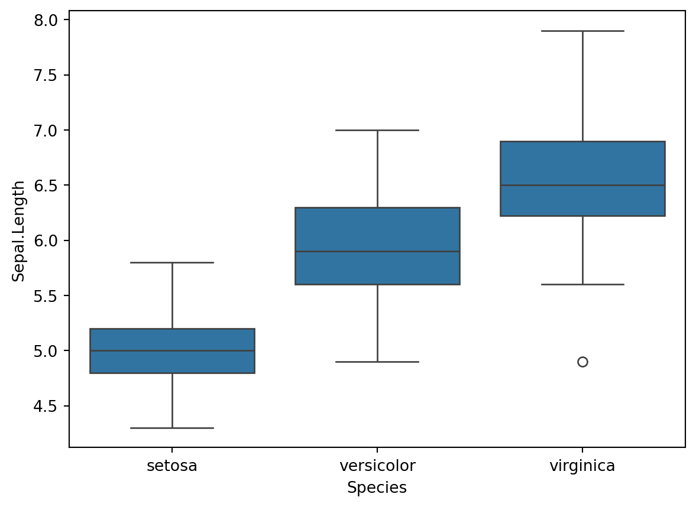
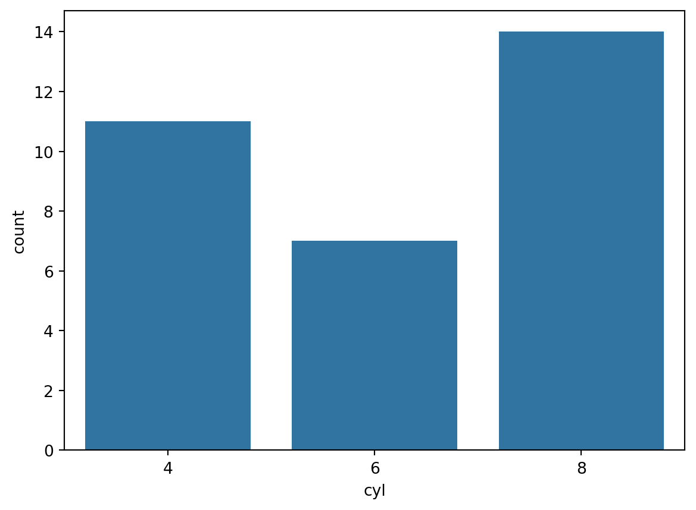
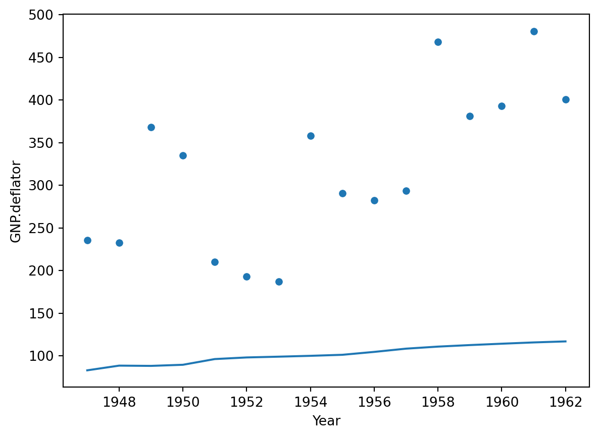
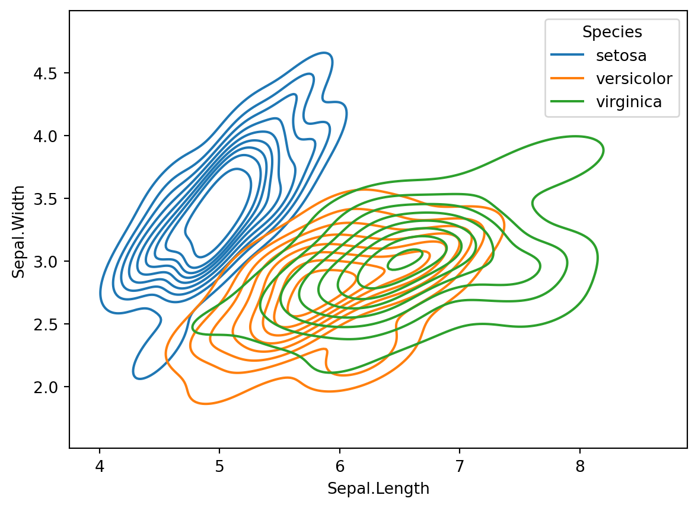
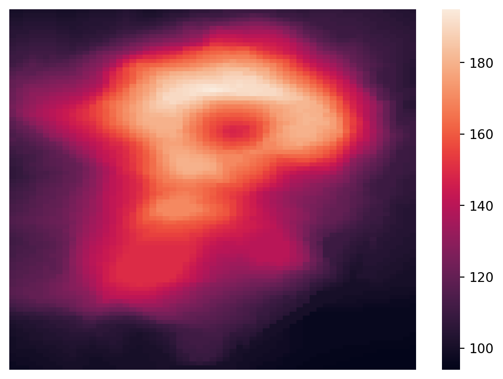
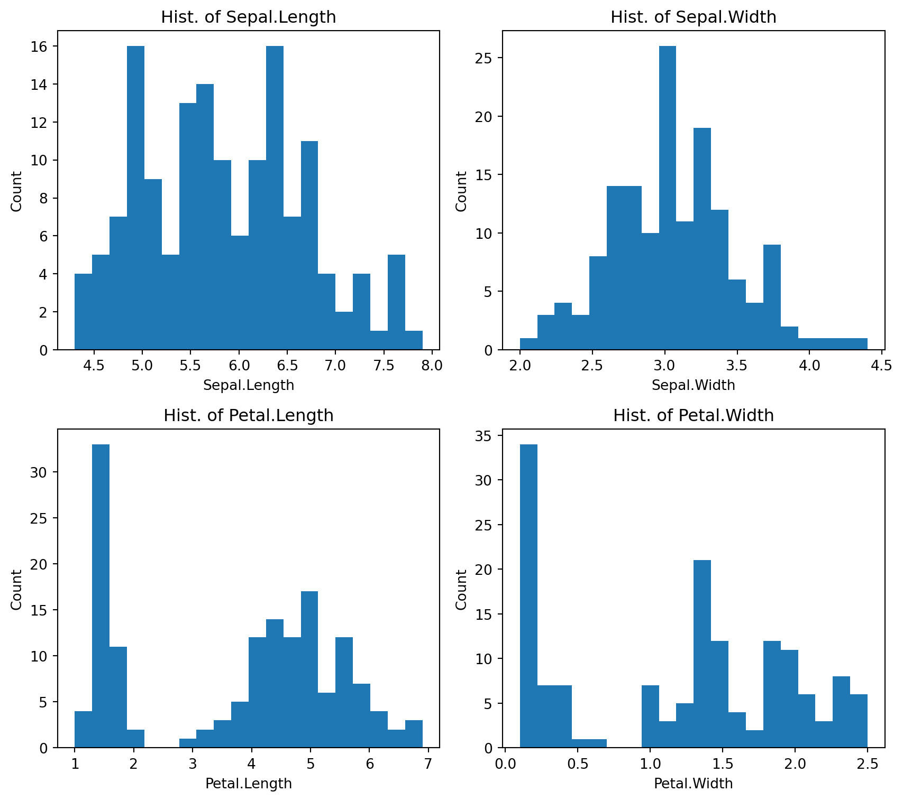

import os
import pandas as pd
import numpy as npData Visualization with Seaborn
敘述統計量
#iris_df = pd.read_csv('../sample_data/iris.csv')
iris_df = pd.read_csv('https://raw.githubusercontent.com/PingYangChen/DS-pytutorial/refs/heads/main/sample_data/iris.csv')
print(iris_df.columns)
print(iris_df.head(5))Index(['Sepal.Length', 'Sepal.Width', 'Petal.Length', 'Petal.Width',
'Species'],
dtype='object')
Sepal.Length Sepal.Width Petal.Length Petal.Width Species
0 5.1 3.5 1.4 0.2 setosa
1 4.9 3.0 1.4 0.2 setosa
2 4.7 3.2 1.3 0.2 setosa
3 4.6 3.1 1.5 0.2 setosa
4 5.0 3.6 1.4 0.2 setosa# 連續型數值敘述統計量
iris_var_columns = iris_df.columns[:4]
iris_decs = iris_df[iris_var_columns].describe()
print(iris_decs) Sepal.Length Sepal.Width Petal.Length Petal.Width
count 150.000000 150.000000 150.000000 150.000000
mean 5.843333 3.057333 3.758000 1.199333
std 0.828066 0.435866 1.765298 0.762238
min 4.300000 2.000000 1.000000 0.100000
25% 5.100000 2.800000 1.600000 0.300000
50% 5.800000 3.000000 4.350000 1.300000
75% 6.400000 3.300000 5.100000 1.800000
max 7.900000 4.400000 6.900000 2.500000# 連續型數值兩兩變數間相關係數
iris_corr_mat = iris_df[iris_var_columns].corr(method='pearson')
print(iris_corr_mat) Sepal.Length Sepal.Width Petal.Length Petal.Width
Sepal.Length 1.000000 -0.117570 0.871754 0.817941
Sepal.Width -0.117570 1.000000 -0.428440 -0.366126
Petal.Length 0.871754 -0.428440 1.000000 0.962865
Petal.Width 0.817941 -0.366126 0.962865 1.000000# 離散型數值敘述統計量
print(iris_df['Species'].value_counts()) # 計數
print(iris_df['Species'].value_counts()*100/len(iris_df)) # 百分比Species
setosa 50
versicolor 50
virginica 50
Name: count, dtype: int64
Species
setosa 33.333333
versicolor 33.333333
virginica 33.333333
Name: count, dtype: float64# 連續型數值 "分組" 敘述統計量
iris_decs_grouped = iris_df.groupby('Species').describe()
print(iris_decs_grouped) Sepal.Length \
count mean std min 25% 50% 75% max
Species
setosa 50.0 5.006 0.352490 4.3 4.800 5.0 5.2 5.8
versicolor 50.0 5.936 0.516171 4.9 5.600 5.9 6.3 7.0
virginica 50.0 6.588 0.635880 4.9 6.225 6.5 6.9 7.9
Sepal.Width ... Petal.Length Petal.Width \
count mean ... 75% max count mean
Species ...
setosa 50.0 3.428 ... 1.575 1.9 50.0 0.246
versicolor 50.0 2.770 ... 4.600 5.1 50.0 1.326
virginica 50.0 2.974 ... 5.875 6.9 50.0 2.026
std min 25% 50% 75% max
Species
setosa 0.105386 0.1 0.2 0.2 0.3 0.6
versicolor 0.197753 1.0 1.2 1.3 1.5 1.8
virginica 0.274650 1.4 1.8 2.0 2.3 2.5
[3 rows x 32 columns]註一：執行分析專案時，常常需要儲存或暫存各式各樣的分析結果，包含資料敘述統計、各種視覺化圖表(寫報告用)、前處理過的資料、建好的模型(備份或供未來使用)，建議有個習慣，在專案程式碼開頭處，便指定好輸出路徑並給予一個變數名稱，例如底下範例 outputPath = 'eda_output'。
註二：另外，當程式碼搬移至別處或別台主機執行，常見需要輸出檔案時，找不到輸出路徑的困擾，建議若需輸出檔案，除了給予指定的路徑外，利用 if not os.path.exists(outputPath): 確認路徑是否存在，若不存在，則自動執行 os.makedirs(outputPath)，為指定的輸出路徑新建資料夾。
# 當統計資訊過大，無法呈現於單一視窗時，可將分析結果儲存起來
outputPath = 'eda_output' # 請見以上註一
if not os.path.exists(outputPath): # 請見以上註二
os.makedirs(outputPath)
# 儲存 "分組" 敘述統計量結果
iris_decs_grouped.to_csv(os.path.join(outputPath, 'iris_decs_grouped.csv')) 利用 Seaborn 套件資料視覺化
安裝套件
使用 VSCode 安裝 Seaborn 套件
- 於 VSCode 介面上方
Terminal > New Terminal開啟 terminal。 - 輸入
pip install seaborn安裝套件

引入 Seaborn 套件，習慣上將其縮寫為 sns。
import seaborn as snsSeaborn 各繪圖函數通用設定：
data: 此項輸入pandas.Dataframe變數，表示統計圖由此資料內容產生。x: 此項輸入統計圖的 X 軸所描繪的變數名稱，為pandas.Dataframe.columns的其中一個欄位名稱。不指定時，則統計圖 X 軸應為統計圖之統計量。y: 此項輸入統計圖的 Y 軸所描繪的變數名稱，為pandas.Dataframe.columns的其中一個欄位名稱。不指定時，則統計圖 Y 軸應為統計圖之統計量。hue: 此項輸入將以不同顏色標示屬於不同分組的資料於統計圖上，為pandas.Dataframe.columns的其中一個欄位名稱，通常設定之變數為類別型變數。不指定時，則統計圖以相同顏色標示資料。
直方圖 Histogram
以下為 Seaborn 以預設設定繪製的直方圖。一般而言，直方圖的 X 軸為變數數值，須於 x 選項設定為繪製直方圖的變數名稱；Y 軸為統計量 (計數值或頻率值)，因此不須設定 y 選項。
sns.histplot(data=iris_df, x='Sepal.Length')
直方圖中最重要參數為 bins ，此參數決定直方圖的柱子數量與寬度，對呈現資料分布的精細度或粗糙度有直接影響，使用上須選擇合適的 bins 值設定，才能正確透過視覺化觀察資料。常見用法如下：
- 整數: 指定柱子數量。例如
bins=10會將數據分成 10 組。 - 串列: 提供一個資料分組的邊界串列，明確指定每個柱子代表的資料範圍。例如
bins=[0, 5, 10, 15]會將數據分別放入 \([0, 5)\)、\([5, 10)\) 和 \([10, 15)\) 範圍內的柱子中。 - 自動計算: 此為
bins的預設值，bins='auto'讓程式根據資料自動計算柱子數量。
以下範例對 Iris 資料的 'Sepal.Length' 分布，在分別設定不同的 bins 值之下，所呈現的圖形。

直方圖常用的統計量為計數值或頻率值，預設設定會於 Y 軸顯示計數值，若想呈現頻率值，則加入選項設定 stat='frequency' 修改呈現統計量。
Iris 資料包含三種不同品種的鳶尾花，可使用 iris_df['Species'].unique() 檢視 Species 欄位中三種品種的名稱。若欲在直方圖分別呈現三種品種之下 Sepal.Length 的數值分布，則加入選項設定 hue='Species'，指定 Species 為著色柱子的參照欄位。
sns.histplot(data=iris_df, x='Sepal.Length', bins = 20, hue='Species', stat='frequency')有時為凸顯三組資料之間集中趨勢的差異，可在直方圖上透過加入選項設定 kde=True，再嵌入各組資料的機率分布圖。機率分布圖的最高點表示該組資料最集中處 (可視為平均數)，強調三組資料間平均數的異同。
sns.histplot(data=iris_df, x='Sepal.Length', bins = 20, hue='Species', stat='frequency', kde=True)盒鬚圖 Boxplot
以下為 Seaborn 以預設設定繪製的盒鬚圖。一般而言，盒鬚圖的 X 軸變數標籤，不須設定 x 選項；Y 軸為變數數值分布及關鍵敘述統計量，須將 x 選項設定為繪製盒鬚圖的變數名稱，例如 y='Sepal.Length'。
sns.boxplot(data=iris_df, y='Sepal.Length')盒鬚圖的一大功用為比較不同群組之間變數值分布的差異。若欲在盒鬚圖分別呈現三種鳶尾花品種之下的變數數值分布，則將品種 Species 加入標籤選項設定 x='Species'，讓盒鬚圖就不同 Species 呈現 Sepal.Length 的數值分布。
sns.boxplot(data=iris_df, x='Species', y='Sepal.Length')
提琴圖 violinplot 為盒鬚圖的一種變化型，在盒鬚圖的基礎上，再嵌入資料的機率分布圖於其兩側，可更凸顯資料的分布情況。
sns.violinplot(data=iris_df, x='Species', y='Sepal.Length')當可用於分群檢視變數值分布差異的變數超過 1 個時，除了將 x 選項設定為用於標籤之變數名稱外，可進一步利用 hue 選項設定第二組標籤用途之變數名稱。以下使用另一個資料集 mtcars 示範操作方式。資料集簡介集內容說明請參考 https://www.rdocumentation.org/packages/datasets/versions/3.6.2/topics/mtcars。
#mtcars_df = pd.read_csv('../sample_data/mtcars.csv')
mtcars_df = pd.read_csv('https://raw.githubusercontent.com/PingYangChen/DS-pytutorial/refs/heads/main/sample_data/mtcars.csv')
print(mtcars_df.columns)
print(mtcars_df.head(5))Index(['mpg', 'cyl', 'disp', 'hp', 'drat', 'wt', 'qsec', 'vs', 'am', 'gear',
'carb'],
dtype='object')
mpg cyl disp hp drat wt qsec vs am gear carb
0 21.0 6 160.0 110 3.90 2.620 16.46 0 1 4 4
1 21.0 6 160.0 110 3.90 2.875 17.02 0 1 4 4
2 22.8 4 108.0 93 3.85 2.320 18.61 1 1 4 1
3 21.4 6 258.0 110 3.08 3.215 19.44 1 0 3 1
4 18.7 8 360.0 175 3.15 3.440 17.02 0 0 3 2使用盒鬚圖檢視不同汽缸數 cyl 及不同排檔方式 am 的汽車，排氣量 disp 之異同。在此，第一組標籤為汽缸數 cyl，將此標籤設定於 X 軸，第二組標籤為排檔方式 am，以不同著色方式表示。同理，提琴圖也可使用相同輸入方式繪製。
sns.boxplot(data=mtcars_df, x='cyl', y='disp', hue='am')
sns.violinplot(data=mtcars_df, x='cyl', y='disp', hue='am')
長條圖 Barplot
以下為 Seaborn 以預設設定繪製的長條圖。一般而言，長條圖的 X 軸為類別型變數之各類別標籤，須於 x 選項設定為繪製長條圖的變數名稱，如 x='cyl' 以資料集 mtcars 為例；Y 軸為統計量 (一般為計數值)，因此不須設定 y 選項。
sns.countplot(data=mtcars_df, x='cyl')
若欲在長條圖分別呈現不同群組之下，目標類別型變數的各類別計數，則於 hue 選項設定用於分群的變數名稱，例如設定 hue='am'，指定 am 為分群變數，作為對長條著色的參照欄位。
sns.countplot(data=mtcars_df, x='cyl', hue='am')趨勢圖 Line plot
趨勢圖呈現變數數值隨著時間或某種順序的變化趨勢。以資料集 longley為例，資料集簡介集內容說明請參考 https://search.r-project.org/CRAN/refmans/AER/html/Longley.html。
#longley_df = pd.read_csv('../sample_data/longley.csv')
longley_df = pd.read_csv('https://raw.githubusercontent.com/PingYangChen/DS-pytutorial/refs/heads/main/sample_data/longley.csv')
print(longley_df.columns)
print(longley_df.head(5))Index(['GNP.deflator', 'GNP', 'Unemployed', 'Armed.Forces', 'Population',
'Year', 'Employed'],
dtype='object')
GNP.deflator GNP Unemployed Armed.Forces Population Year Employed
0 83.0 234.289 235.6 159.0 107.608 1947 60.323
1 88.5 259.426 232.5 145.6 108.632 1948 61.122
2 88.2 258.054 368.2 161.6 109.773 1949 60.171
3 89.5 284.599 335.1 165.0 110.929 1950 61.187
4 96.2 328.975 209.9 309.9 112.075 1951 63.221以下為 Seaborn 以預設設定繪製的趨勢圖。一般而言， X 軸為時間變數或順序變數，如本例設定 x='Year'；Y 軸為欲觀察趨勢的變數，如 y='GNP.deflator'。
sns.lineplot(data=longley_df, x='Year', y='GNP.deflator')
散布圖 Scatter Plots
散布圖呈現兩個連續型變數之間的關聯狀況。以資料集 iris 為例，欲觀察變數 Sepal.Length 與 Sepal.Width 之間的關聯，於 scatterplot 函數中將此兩變數分別輸入至 x 與 y 選項。
sns.scatterplot(data=iris_df, x='Sepal.Length', y='Sepal.Width')若欲觀察不同群組之下，兩個連續型變數之間的關聯狀況，則於 hue 選項設定用於分群的變數名稱，例如此例可設定 hue='Species'，指定 Species 為分群變數，作為對座標點著色的參照欄位。
sns.scatterplot(data=iris_df, x='Sepal.Length', y='Sepal.Width', hue='Species')
等高線圖 Contour Plots
在 Seaborn 中，無傳統只能輸入矩陣繪製等高線圖的功能，取而代之的是，輸入資料集並透過 kernel density estimate (KDE) 估計方式，觀察兩個連續型變數的聯合分布 (joint distribution)。以資料集 iris 為例，欲觀察變數 Sepal.Length 與 Sepal.Width 的聯合分布，於 kdeplot 函數中將此兩變數分別輸入至 x 與 y 選項。
以下為一般等高線圖，在此等高線的涵義為該層範圍內數據在資料中有類似的分布狀況 (出現的頻率)。
sns.kdeplot(data=iris_df, x='Sepal.Length', y='Sepal.Width')然而，一般等高線圖不易輔助判讀數據集中之處，例如上圖中的兩處中心是否數據密度相似。此時，可再加上漸層著色，設定 fill=True 以顏色深淺程度，表示等高線圖各層之間數據分布的差異。下圖中，透過著色可知，圖中位於相對右下位置的等高線中心，具有更密的數據分布。
sns.kdeplot(data=iris_df, x='Sepal.Length', y='Sepal.Width', fill=True)若欲觀察不同群組之下，兩個連續型變數的聯合分布，則於 hue 選項設定用於分群的變數名稱，例如此例可設定 hue='Species'，指定 Species 為分群變數，作為對等高線著色的參照欄位。在此，便不建議再加入著色，可能使漸層重疊影響資料觀察。
sns.kdeplot(data=iris_df, x='Sepal.Length', y='Sepal.Width', hue='Species')
多欄資料觀察圖形拼接
當資料中有多欄連續型變數時，常見的觀察方式是繪製兩兩變數的散布圖，觀察各變數之間的關聯狀況。此時可使用 pairplot 函數，一次性地將所有連續型變數配對的散布圖繪製出，並拼接成一張矩陣圖。
同 scatterplot，若欲觀察不同群組之下，所有連續型變數配對的關聯狀況，則於 hue 選項設定用於分群的變數名稱，例如此例可設定 hue='Species'，指定 Species 為分群變數，作為對各子圖座標點著色的參照欄位。
sns.pairplot(data=iris_df, hue='Species')從 pairplot 結果可看出，矩陣圖的右上部及左下部重複顯示了兩兩連續型變數的 scatterplot，造成空間上略顯浪費。若可只於右上部及左下部其中之一顯示 scatterplot，利用另一半部呈現其他視覺化圖形，則可更大化地利用矩陣圖的空間。此時可使用 PairGrid 功能，分別對右上部、左下部及對角線上繪製不同的視覺化圖形。
g = sns.PairGrid(data=iris_df, diag_sharey=False, hue='Species')
# 繪製右上部兩兩變數統計圖 (例，散布圖)
g.map_upper(sns.scatterplot)
# 繪製左下部兩兩變數統計圖 (例，等高線圖)
g.map_lower(sns.kdeplot)
# 繪製對角線單一變數統計圖 (例，直方圖)
g.map_diag(sns.histplot)
熱圖 Heatmap
熱圖 Heatmap 為輸入一個數值矩陣，以顏色漸層來表達矩陣中的數值大小。在此以一個火山在一個網格上所量測的海拔高度資料 volcano 為例，資料集簡介集內容說明請參考 https://www.rdocumentation.org/packages/datasets/versions/3.6.2/topics/volcano。
#volcano_df = pd.read_csv('../sample_data/volcano.csv')
volcano_df = pd.read_csv('https://raw.githubusercontent.com/PingYangChen/DS-pytutorial/refs/heads/main/sample_data/volcano.csv')
print(volcano_df.columns)
print(volcano_df.head(10))
print(volcano_df.shape)Index(['V1', 'V2', 'V3', 'V4', 'V5', 'V6', 'V7', 'V8', 'V9', 'V10', 'V11',
'V12', 'V13', 'V14', 'V15', 'V16', 'V17', 'V18', 'V19', 'V20', 'V21',
'V22', 'V23', 'V24', 'V25', 'V26', 'V27', 'V28', 'V29', 'V30', 'V31',
'V32', 'V33', 'V34', 'V35', 'V36', 'V37', 'V38', 'V39', 'V40', 'V41',
'V42', 'V43', 'V44', 'V45', 'V46', 'V47', 'V48', 'V49', 'V50', 'V51',
'V52', 'V53', 'V54', 'V55', 'V56', 'V57', 'V58', 'V59', 'V60', 'V61'],
dtype='object')
V1 V2 V3 V4 V5 V6 V7 V8 V9 V10 ... V52 V53 V54 V55 \
0 100 100 101 101 101 101 101 100 100 100 ... 107 107 107 106
1 101 101 102 102 102 102 102 101 101 101 ... 108 108 107 107
2 102 102 103 103 103 103 103 102 102 102 ... 109 108 108 107
3 103 103 104 104 104 104 104 103 103 103 ... 109 109 108 108
4 104 104 105 105 105 105 105 104 104 103 ... 110 109 109 108
5 105 105 105 106 106 106 106 105 105 104 ... 110 110 109 108
6 105 106 106 107 107 107 107 106 106 105 ... 110 111 110 109
7 106 107 107 108 108 108 108 107 107 106 ... 113 112 110 110
8 107 108 108 109 109 109 109 108 108 107 ... 115 114 112 110
9 108 109 109 110 110 110 110 109 109 108 ... 117 115 113 111
V56 V57 V58 V59 V60 V61
0 106 105 105 104 104 103
1 106 106 105 105 104 104
2 107 106 106 105 105 104
3 107 107 106 106 105 105
4 107 107 107 106 106 105
5 108 108 107 107 106 106
6 109 108 108 107 107 106
7 109 109 108 108 107 106
8 110 109 109 108 107 107
9 110 110 109 108 107 107
[10 rows x 61 columns]
(87, 61)火山資料有 87 列 (rows)、61 欄 (columns)。基本上直接輸入此 pandas.Dataframe 使用 seaborn 的 heatmap 功能繪製熱圖即可，但為避免資料中有非數值的內容，如空值、NA 值、字串等，通常建議先將此 pandas.Dataframe 轉換為 numpy.array 數值矩陣 (記得先 import numpy)，確認 numpy.array 內容全為數值後，再行繪製熱圖。
volcano_array = volcano_df.values # pandas.Dataframe -> numpy.array
print(volcano_array.shape)
# 確認 numpy.array 是否全為數值
print(np.all(np.isfinite(volcano_array)))(87, 61)
True以預設設定繪製熱圖，僅須將 numpy.array 數值矩陣輸入至 data 選項即可。
sns.heatmap(data=volcano_array)
若不需要 X、Y 軸的座標標籤，可加入 xticklabels=False 及 yticklabels=False 分別關閉 X 及 Y 軸的座標標籤顯示，使熱圖看起來較乾淨。
sns.heatmap(data=volcano_array, xticklabels=False, yticklabels=False)
使用熱圖的關鍵在於漸層色的選擇，因 Seaborn 為基於 Matplotlib 所開發的高階繪圖套件，可從 Matplotlib 內建的漸層色函式庫中挑選合適的漸層對 Seaborn 的熱圖著色。漸層色選擇請參考 https://matplotlib.org/stable/gallery/color/colormap_reference.html。
漸層色應透過 cmap 選項設定，例如 cmap='RdPu'。以下範例分別挑選 'RdPu'、 'YlGn' 及 'Spectral' 三種漸層色示範對同一張熱圖的著色結果。
sns.heatmap(data=volcano_array, cmap='RdPu')Text(0.5, 1.0, "cmap='Spectral'")
在資料分析中，熱圖最常見的應用為視覺化呈現資料中多欄連續型變數，兩兩配對的相關係數值。例如以下透過 pandas 的 corr 函數計算 iris 四個鳶尾花特徵的相關係數矩陣。
iris_var_columns = iris_df.columns[:4]
iris_corr_mat = iris_df[iris_var_columns].corr()
print(iris_corr_mat) Sepal.Length Sepal.Width Petal.Length Petal.Width
Sepal.Length 1.000000 -0.117570 0.871754 0.817941
Sepal.Width -0.117570 1.000000 -0.428440 -0.366126
Petal.Length 0.871754 -0.428440 1.000000 0.962865
Petal.Width 0.817941 -0.366126 0.962865 1.000000熱圖漸層色的挑選應視使用情境而定：在視覺化呈現相關係數矩陣時，漸層色的挑選將直接影響是否能正確判讀。當數具有特殊性值時，例如相關係數 \(r\) 以 0 為中心，當 \(r>0\) 表示兩變數呈正相關，當 \(r<0\) 表示兩變數呈負相關，因此在漸層選擇上，也應以 0 為中心，並挑選兩種盡可能對比的顏色漸層分別呈現 \(r>0\) 及 \(r<0\) 的數值大小 (偏離 0 的幅度)，且兩種漸層色應盡量對稱，即 \(r=0.5\)、\(r=-0.5\) 顏色不同但亮度相似。
以下為視覺化呈現相關係數矩陣的錯誤示範。
- 左：單一顏色漸層易導致視覺上認為顏色越淺兩變數越無相關。
- 中：兩種顏色漸層，但其不以 0 為中心，同樣顏色深度的深藍色約為 \(r=-0.4\)、而深紅色約為 \(r=1.0\)。
- 右：兩種顏色漸層，且以 0 為中心，已接近理想，但圖右色階尺規不對稱。
較好的相關係數矩陣熱圖視覺化範例如下。
sns.heatmap(data=iris_corr_mat, cmap='seismic', center=0, vmin=-1, vmax=1)Binning & Hexbin Plots
大型資料的視覺化方式較為受限，尤其以散布圖受影響的程度最為嚴重。 本節使用模擬的大量資料示範視覺化方式，此資料共有 12,000 筆模擬資料，包含四個欄位，前三欄為連續型變數，最後一欄為三類別的類別型變數。
#big_df = pd.read_csv('../sample_data/big_demo.csv')
big_df = pd.read_csv('https://raw.githubusercontent.com/PingYangChen/DS-pytutorial/refs/heads/main/sample_data/big_demo.csv')
print(big_df.columns)
print(big_df.head(5))
print(big_df['Status'].value_counts())Index(['X1', 'X2', 'X3', 'Status'], dtype='object')
X1 X2 X3 Status
0 0.483556 1.700799 0.761458 1
1 1.094642 -0.961418 0.149767 1
2 0.974463 -1.812746 0.372368 1
3 1.127935 0.201944 -0.443152 1
4 0.921588 -2.167014 -0.998981 1
Status
1 4000
2 4000
3 4000
Name: count, dtype: int64Binning Plot 為兩個連續型變數的直方圖， X 軸為第一個變數數值、 Y 軸為第二個變數數值，而直方圖統計量 (計數值或頻率值) 則以顏色漸層呈現。其中，bins 仍為此圖的重要設定參數之一，請參考前節對直方圖用法之說明。
sns.histplot(data=big_df, x='X1', y='X2')以下針對模擬資料，分別繪製散布圖、等高線圖及 Binning Plot 相比較。可見
- 散布圖受大量資料影響，座標點嚴重相互疊合，影響視覺觀察。
- 等高線圖以最簡化的方式呈現變數的聯合分布狀態，數據分布較少之邊緣資訊，因過度簡化而消失。
- Binning Plot 將兩變數數值區間格點化，以顏色深度表示格點內的資料量，可完整呈現所有資料的分布情形。
Text(0.5, 1.0, 'Bin Plot')Seaborn 套件無單獨繪製 Hexbin plot 的函數，若欲繪製 Hexbin plot，可使用 jointplot 函數，輸入資料後指定 X、Y 軸須呈現的變數，並設定 kind="hex"。此函數也可透過設定 kind="hist" 繪製 Binning plot。
sns.jointplot(data=big_df, x='X1', y='X2', kind="hist")
sns.jointplot(data=big_df, x='X1', y='X2', kind="hex")利用 GAI 找程式範例
示範例一： 以 seaborn 對 iris 資料繪製散布圖，且對三個品種的資料進行不同著色。

import seaborn as sns
import matplotlib.pyplot as plt
# Load the iris dataset
iris = sns.load_dataset("iris")
# Create a scatter plot
sns.scatterplot(x="sepal_length", y="sepal_width", hue="species", data=iris)
# Display the plot
plt.show()
示範例二： 承上，針對同一張圖，檢視使用 matplotlib 的繪製方法。

import matplotlib.pyplot as plt
import pandas as pd
from matplotlib.colors import ListedColormap
# Load the iris dataset
iris = pd.read_csv("https://raw.githubusercontent.com/mwaskom/seaborn-data/master/iris.csv")
# Create a color map for the species
colors = {'setosa': 'blue', 'versicolor': 'green', 'virginica': 'red'}
# Plot the scatter plot
for species, color in colors.items():
subset = iris[iris['species'] == species]
plt.scatter(subset['sepal_length'], subset['sepal_width'], label=species, color=color)
# Add labels and legend
plt.xlabel('Sepal Length')
plt.ylabel('Sepal Width')
plt.legend(title='Species')
# Display the plot
plt.show()示範例三： 以 seaborn 對 iris 資料分三個品種繪製盒鬚圖。

import seaborn as sns
import matplotlib.pyplot as plt
# Load the iris dataset
iris = sns.load_dataset("iris")
# Create a boxplot
sns.boxplot(x="species", y="sepal_length", data=iris)
# Add labels and title
plt.xlabel('Species')
plt.ylabel('Sepal Length')
plt.title('Comparison of Sepal Length among Species')
# Display the plot
plt.show()利用 Matplotlib 套件資料視覺化
Matplotlib 是 Python 中最早的視覺化工具，使用上非常靈活，幾乎可以用來生成任何類型的圖表，相對地，其需要的語法便較為複雜，特別是在美化圖表或複雜佈局時，也因 Matplotlib 容許使用者完全控制圖表的每一個細節，可手動設定的參數非常多樣，使得學習 Matplotlib 上需要更多的時間與試誤經驗。遇到高度靈活性美觀處理、客製化程度高的情境、特殊類型的圖表，Seaborn 可以說是遠遠不足的，此時 Matplotlib 便能派上用場。雖然不容易入門，由於 Matplotlib 的靈活性和完整性，學習使用它可應對更多不同的資料視覺化任務，也有助於理解 Python 視覺化的核心原理。
安裝套件
使用 VSCode 安裝 Seaborn 套件
- 於 VSCode 介面上方
Terminal > New Terminal開啟 terminal。 - 輸入
pip install matplotlib安裝套件
引入 Matplotlib 套件，基本上會先引入需求量最大的 pyplot 模組，將其縮寫為 plt。
from matplotlib import pyplot as plt- 使用教學：[https://matplotlib.org/stable/tutorials/index.html]{https://matplotlib.org/stable/tutorials/index.html}
- 繪圖範例：https://matplotlib.org/stable/gallery/index.html
以下為基本 matplotlib 程式架構
- 決定圖形框架大小
- 決定框架內圖形數量與排列布局
- 使用繪圖函數繪圖
- 對圖形進行設定
- (若需要) 儲存圖片
# 以下為示範程式框架，勿執行!
# 決定圖形框架大小 (width, height) in inches
fig = plt.figure(figsize=(10, 8))
# 決定框架內圖形數量與排列
# nrows, ncols, index
ax = plt.subplot(1, 1, 1)
# ---------------------------------------
# 繪圖區
ax.plot(...); ax.hist(...); ax.bar(...);
ax.boxplot(...); ax.pie(...)
# ---------------------------------------
# 設定區
ax.set_title('Graph Title', fontsize = 22)
ax.set_ylabel('Label for Y-axis', fontsize = 20)
ax.set_xlabel('Label for X-axis', fontsize = 20)
ax.tick_params(labelsize = 18)
# ---------------------------------------
# 儲存圖片
fig.savefig('FILENAME.png')
# 以上須整段一次執行才能繪圖以直方圖示範 Matplotlib 布局功能
以下範例為 Iris 資料中 'Sepal.Length' 的數值分布，且以預設的 bins 呈現。
fig = plt.figure(figsize = (4, 4))
ax = plt.subplot(1, 1, 1)
ax.hist(iris_df['Sepal.Length']) # 繪製 Sepal.Length 的直方圖
ax.set_title('Histogram of %s' % ('Sepal.Length')) # 設定標題
ax.set_ylabel('Count') # 設定 Y 軸標籤
ax.set_xlabel('Sepal.Length') # 設定 X 軸標籤
fig.show()matplotlib 中 hist 函數最重要參數為 bins ，此參數決定直方圖的柱子數量與寬度，對呈現資料分布的精細度或粗糙度有直接影響，使用上須選擇合適的 bins 值設定，才能正確透過視覺化觀察資料。常見用法如下：
- 整數: 指定柱子數量。例如
bins=10會將數據分成 10 組。 - 串列: 提供一個資料分組的邊界串列，明確指定每個柱子代表的資料範圍。例如
bins=[0, 5, 10, 15]會將數據分別放入 \([0, 5)\)、\([5, 10)\) 和 \([10, 15)\) 範圍內的柱子中。 - 自動計算: 此為
bins的預設值，bins='auto'讓 matplotlib 根據資料自動計算柱子數量。
以下範例對 Iris 資料的 'Sepal.Length' 分布，在分別設定不同的 bins 值之下，所呈現的圖形。
fig_nr = 1
fig_nc = 3
bins_set = [10, 20, 50]
fig = plt.figure(figsize = (10, 3))
for i in range(3):
ax = plt.subplot(fig_nr, fig_nc, i+1)
ax.hist(iris_df['Sepal.Length'], bins = bins_set[i])
ax.set_title('Hist. with %d bins' % (bins_set[i]))
ax.set_ylabel('Count')
ax.set_xlabel('Sepal.Length')
fig.show()Iris 資料共有四個連續型數值欄位 Sepal.Length 、 Sepal.Width 、 Petal.Length 及 Petal.Width。設定 plt.subplot 布置一個 2 x 2 的布局，使用 for 迴圈針對各連續變數一一繪製直方圖，並給予各圖標題顯示變數名稱。
iris_var_columns = iris_df.columns[:4]
print(iris_var_columns)
# 使用變數預先設定布局參數
fig_nr = 2 # 列數
fig_nc = 2 # 行數
fig = plt.figure(figsize = (9, 8))
for i in range(len(iris_var_columns)):
ax = plt.subplot(fig_nr, fig_nc, i+1) #圖形 index 從 1 開始
# 繪製第 i 個連續變數的直方圖
ax.hist(iris_df[iris_var_columns[i]], bins = 20)
# 設定標題
ax.set_title('Hist. of %s' % (iris_var_columns[i]))
# 設定 Y 軸標籤
ax.set_ylabel('Count')
# 設定 X 軸標籤
ax.set_xlabel(iris_var_columns[i])
# 讓圖形自動優化排版
fig.tight_layout()
fig.show()Index(['Sepal.Length', 'Sepal.Width', 'Petal.Length', 'Petal.Width'], dtype='object')
若欲在直方圖分別呈現 Iris 資料三種品種之下 Sepal.Length 的數值分布，maxplotlib 則無類似 seaborn 的 hue 選項可自動分割資料、分別繪製直方圖。此時便須利用 pandas 的 groupby 功能先將資料分組，步驟如下：
- 使用語法
gb = df.groupby('欄位名稱')指定對資料分組的欄位名稱，此時gb僅是記錄下資料分組的方式，尚未對資料實際分組，需要後續語法指定對各分組的作為。 - 語法
gb.groups可呼叫出各分組的資料編號。 - 逐一帶入
gb.groups的內容至gb.get_group()功能中，即可取出分組後的資料。
# 指定 Species 為資料分組的參照欄位
gb = iris_df.groupby('Species')
print(gb.groups)
# 利用串列分別儲存分組的資料
iris_group_df = [gb.get_group(ele)['Sepal.Length'] for ele in gb.groups]
# 繪製分組直方圖
fig = plt.figure(figsize = (9, 8))
ax = plt.subplot(1, 1, 1)
ax.hist(iris_group_df, bins=20)
fig.show(){'setosa': [0, 1, 2, 3, 4, 5, 6, 7, 8, 9, 10, 11, 12, 13, 14, 15, 16, 17, 18, 19, 20, 21, 22, 23, 24, 25, 26, 27, 28, 29, 30, 31, 32, 33, 34, 35, 36, 37, 38, 39, 40, 41, 42, 43, 44, 45, 46, 47, 48, 49], 'versicolor': [50, 51, 52, 53, 54, 55, 56, 57, 58, 59, 60, 61, 62, 63, 64, 65, 66, 67, 68, 69, 70, 71, 72, 73, 74, 75, 76, 77, 78, 79, 80, 81, 82, 83, 84, 85, 86, 87, 88, 89, 90, 91, 92, 93, 94, 95, 96, 97, 98, 99], 'virginica': [100, 101, 102, 103, 104, 105, 106, 107, 108, 109, 110, 111, 112, 113, 114, 115, 116, 117, 118, 119, 120, 121, 122, 123, 124, 125, 126, 127, 128, 129, 130, 131, 132, 133, 134, 135, 136, 137, 138, 139, 140, 141, 142, 143, 144, 145, 146, 147, 148, 149]}從結果可看出，matplotlib 將資料分組以併排方式繪製直方圖，與 seaborn 設定 hue='Species' 之分組繪圖結果相比，seaborn 的圖形較為美觀且易讀。若需一次繪製四個連續型數值的直方圖，可組合 matplotlib 的布局功能及 seaborn 圖形功能，如下示範。
Matplotlib 的圖形客製化
以下範例使用 Iris 資料中 'Sepal.Length' 的數值繪製盒鬚圖，再加入
- 於盒鬚圖各關鍵處標示統計量數值（最大值、第三百分位數、中位數、第一百分位數、最小值）
- 以紅色圓點標示平均數的位置，並以紅色文字顯示平均數數值
- 移除 X 軸刻度標籤
import numpy as np
# 預先使用 numpy 計算需要的統計量
the_var = iris_df['Sepal.Length'].values
max_var = np.max(the_var)
q3 = np.quantile(the_var, 0.75)
q2 = np.quantile(the_var, 0.50)
q1 = np.quantile(the_var, 0.25)
min_var = np.min(the_var)
mean_var = np.mean(the_var)
# 開始客製圖形
fig = plt.figure(figsize = (4, 4))
ax = plt.subplot(1, 1, 1)
# 繪製 Sepal.Length 的盒鬚圖，並設定寬度為 0.5
ax.boxplot(the_var, widths = 0.5)
# 標示統計量
ax.text(x=1.3, y=max_var, s=max_var, va = 'center', ha = 'left')
ax.text(x=1.3, y=q3, s=q3, va = 'center', ha = 'left')
ax.text(x=1.3, y=q2, s=q2, va = 'center', ha = 'left')
ax.text(x=1.3, y=q1, s=q1, va = 'center', ha = 'left')
ax.text(x=1.3, y=min_var, s=min_var, va = 'center', ha = 'left')
# 以紅色圓點標示平均數的位置
ax.plot(1, mean_var, marker='o', color='#FF0000')
ax.text(x=1.01, y=mean_var, s='%.2f' % (mean_var), color='#FF0000', va = 'bottom', ha = 'left')
# 設定區
ax.set_xticks(ticks=[]) # 移除 X 軸刻度標籤
ax.set_title('Boxplot of %s' % ('Sepal.Length')) # 設定標題
ax.set_ylabel('Sepal.Length') # 設定 Y 軸標籤
fig.tight_layout()
fig.show()